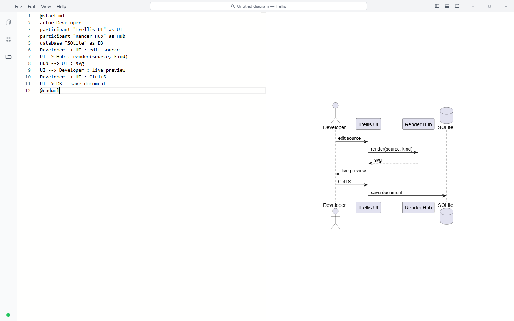
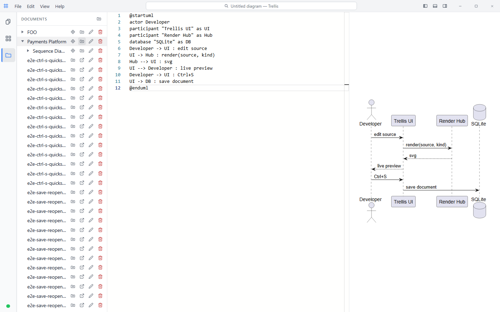

Trellis — Frontend Design & UX Audit
1.Executive verdict
Trellis has a strong skeleton and an honest core loop, but it currently behaves like a single-user scratchpad wearing a workspace's clothes. The VS Code-style shell is clean and familiar, the edit → Ctrl+Enter → preview loop is fast and reliable, and the recent additions (folder tree, scope-to-folder, templates, disk explorer) are genuinely useful. The gap is everywhere the shell promises more than the product delivers: five visible controls do nothing, the search pill is decorative, unsaved work can be lost by closing the tab, and a rendered diagram — the entire point of the tool — cannot be exported, copied, or zoomed.
The five moves that matter most, in order of leverage:
① Make every visible control real (or remove it) — trust is the cheapest feature to ship.
② Close the data-loss holes: dirty indicator + beforeunload guard.
③ Give the preview an output path: export SVG/PNG, copy, zoom/fit — table stakes for a diagram tool.
④ Treat PlantUML as a first-class language in Monaco (highlighting, snippets, error mapping) and offer
debounced auto-render — this is where "quickly developing designs" is won or lost.
⑤ Turn the fake search pill into a real command palette + library search; it is the single feature that
makes a growing library manageable.
2.Product snapshot & scorecard
Everything lives on one route: a 35px title bar (File menu functional; Edit/View/Help decorative), a 48px activity rail (Explorer / Templates / Documents toggles + connection dot), one exclusive side panel, a Monaco editor (plaintext for PlantUML, markdown mode for Markdown), and a render preview fed by a SignalR hub. Persistence: SQLite documents/folders/templates via a small REST API; no auth, no users, no sharing — by design, so far.

| Area | Today | Grade | Biggest lever |
|---|---|---|---|
| Shell & chrome | Clean VS Code idiom; ~5 dead controls | B− | Implement or remove dead chrome |
| Authoring (editor) | Solid Monaco base; PlantUML is plaintext; no settings | C+ | PlantUML language support + auto-render |
| Preview | Fast, reliable; completely inert output | C | Export / copy / zoom |
| Library (documents) | Folder tree, DnD, move dialog, scope-to-folder | B | Search, sort, recency; undo/trash |
| Templates | Full CRUD from editor buffer; flat, no preview | B− | Categories, previews, parameters |
| Feedback & safety | Good error text; silent saves; no dirty marker; no unload guard | D | Dirty dot + beforeunload + toasts |
| Keyboard & discoverability | Good shortcuts exist; several invisible; no palette | C+ | Command palette; surface Save As |
| Collaboration / shop workflow | None yet (single-user, local) | — | See §8 |
3.What already works well
- The rendering transport is the right architecture for live preview. Request/response over an already-open SignalR connection renders in well under a second and is precisely the plumbing that debounced auto-render (see F6) needs — the hard part is already built.
- The three-panel library model is coherent. Explorer (disk), Documents (database), Templates (starters) map cleanly onto how a shop actually works: repo files, shared library, blessed starting points. Scope-to-folder gives the tree a real focus mechanism.
- Persistence of layout state is thorough — pane ratio, panel choice, panel width, and folder scope all survive a reload. This discipline should extend to editor preferences when they exist.
- Error text, where it exists, is humane. "Could not save 'X'.", reconnect-by-name in the Explorer, cascade warnings on folder delete — concrete, specific, correctly scary.
- Accessibility groundwork is present: consistent
aria-labels,role="alert"/role="toolbar", keyboard-resizable dividers, aria-expanded on tree rows. Gaps remain (F17), but the floor is far above typical internal tools. - Six seeded templates (blank, sequence, class, C4 ×3) as ordinary editable rows is the right call: governance by convention, not by hard-coding.
4.Findings — trust & first impressions
F1HIGH Roughly a third of the title bar is dead UI
Evidence: Edit, View and Help menu buttons have no handlers; the center pill is labelled "Search documents" but does nothing; "Toggle Panel" and "Toggle Secondary Side Bar" toggle panels that do not exist; minimize/maximize/close are cosmetic — the close button even carries the destructive red hover. (shot 01, title-bar component.)
{kind=link}
Every dead control spends user trust: after two clicks that do nothing, users stop exploring — which then suppresses discovery of the features that do exist. The fake close button is the worst offender; a red-hover ✕ in a browser tab invites a click whose "nothing happened" reads as breakage.
Recommend: a one-day sweep — delete the two dead layout toggles and the window controls (or gate them behind a future desktop build), remove Edit/View/Help until each has ≥1 real item, and either wire the search pill to a real palette (idea P5-1) or remove it until that lands. "Everything visible works" is the cheapest credibility feature the product can ship.
F2MED The first-run experience is a blank page with one hint
Evidence: a fresh visit shows an empty editor and "Press Ctrl+Enter in the editor to render your diagram." (shot 01). The six templates — the fastest path to a first success — are hidden behind an unlabeled rail icon.
Recommend: make the empty state active: 3–4 template cards ("Sequence", "C4 Context", "Class", "Markdown doc") plus "recent documents" directly in the preview pane's dead space. First render in under ten seconds, zero syntax knowledge required.
F3MED Real shortcuts are invisible; the Help surface is empty
Evidence: Ctrl+Shift+S (Save As) exists in code but appears in no menu and no label; the File menu lists only New/Save/Upload (shot 03); Help is a dead button; there is no shortcut reference anywhere. Users cannot learn what the product can do from inside the product.
{kind=link}
Recommend: add "Save As… Ctrl+Shift+S" and "Render Ctrl+Enter" to the File menu; give Help two real items (Keyboard shortcuts, PlantUML reference link). This is hours of work and removes the whole finding.
5.Findings — the core loop (edit → render → save)
F4HIGH Unsaved work can be silently lost
Evidence: hasUnsavedChanges is tracked internally (it gates New/open/template
flows with a confirm), but it is surfaced nowhere — no dot, no asterisk, no title-bar cue — and there is no
beforeunload handler in the codebase. Closing the tab, hitting the browser back button, or a
crash discards edits with zero warning.
Recommend: (a) show a dirty marker next to the document name in the title pill;
(b) register a beforeunload guard while dirty; (c) longer-term, draft autosave to
localStorage keyed by document id so even a crash loses nothing. (a)+(b) are an afternoon.
F5HIGH The rendered diagram is a dead end — no export, copy, zoom, or pan
Evidence: the preview is a static <div> with scrollbars. There is no way
to download the SVG/PNG, copy it to the clipboard, zoom a dense diagram, or fit-to-width
(shot 02). The only way to get a diagram out of Trellis today
is a screenshot — which breaks the "manage designs here" promise the moment output is needed in a slide,
PR description, or wiki page.
{kind=link}
Recommend: a slim hover toolbar on the preview: Copy SVG · Download SVG · Download PNG · Zoom −/100%/+ · Fit. SVG download/copy is trivial (the markup is already in hand); PNG is one canvas rasterization away. This single control bar converts Trellis from "viewer" to "producer".
F6HIGH Rendering is manual-only
Evidence: the preview updates only on Ctrl+Enter. Nothing renders on document open (stale preview vs. fresh source), nothing on save, and there is no live mode — while the SignalR channel and per-request render results were built precisely to support one.
Recommend: a debounced auto-render toggle (500–800ms after typing stops, keyed off the existing hub; keep Ctrl+Enter for force-render), plus render-on-open. Markdown docs should simply always live-render — the server round-trip is cheap and side-effect-free. This is the highest-impact "quickly develop designs" feature available.
F7HIGH PlantUML — the product's core language — is edited as plaintext
Evidence: Monaco is configured with language: 'plaintext' for PlantUML
(shot 02 — uniform text). No keyword coloring, no
autocomplete for participants/arrows/skinparams, no snippets, no bracket awareness. Markdown, the secondary
kind, gets full language support; the flagship kind gets none.
Recommend: a Monarch grammar for PlantUML (a well-trodden path — coloring for keywords,
arrows, strings, comments, @start/@end pairs) plus completion items for declared participants
and common keywords, and 8–10 snippets (participant, alt/else block, note, C4 element). Later: map render
errors to line squiggles (F8).
F8MED Render errors never point back at the source
Evidence: hub-level failures render as a text panel in the preview; many PlantUML syntax mistakes instead come back as PlantUML's own "error picture" or a silently lenient rendering (a malformed arrow line simply drew a wrong diagram during this audit). In no case does the editor show which line is at fault.
Recommend: parse the line number PlantUML reports on failure and surface it as a Monaco marker (red squiggle + gutter icon) with the message; keep the preview panel text as the fallback. Error → place is what makes fixing fast.
F9LOW No editor preferences at all
Evidence: word wrap off, light theme only, fixed font size — all hard-coded; no settings surface exists. The stated audience (diagram-as-code developers) lives in dark editors all day.
Recommend: start with exactly three persisted toggles — theme (light/dark/system, applied to shell + Monaco), word wrap, auto-render (from F6) — behind a small gear popover. Resist a settings page; there isn't enough to configure yet.
6.Findings — managing the library at scale

F10HIGH The library has no search, no sort, no recency
Evidence: the panel above. The tree is alphabetical-only; timestamps exist in the data but surface only as a raw ISO string in a native tooltip ("Updated 2026-01-02T00:00:00Z"); there is no filter box, no "recently edited", no way to answer "what was I working on yesterday?".
Recommend: in order of value — ① a filter-as-you-type box at the top of the panel (client-side; both lists are already fully loaded), ② a Recent group (last 5 opened) pinned above the tree, ③ human-relative timestamps ("2d ago") as a right-aligned secondary column, ④ sort toggle (name ⇄ updated). The scope feature just shipped is the complement to this, not a substitute — scope narrows where, search finds what.
F11MED Destructive actions are irreversible
Evidence: document delete and cascading folder delete are permanent after a native confirm. No undo, no trash, no archive. One misclick on a folder's ✕ (adjacent to three other always-visible icons — see F12) can erase a subtree of work.
Recommend: soft-delete with a 30-day trash (one deletedAt column and a
filter), or minimally an "Undo" toast for 10 seconds after any delete. For a tool that wants to hold a
team's design record, recoverability is a prerequisite, not a nicety.
F12LOW Row action density and native prompts will not scale gracefully
Evidence: four always-visible icon buttons consume ~35% of every row at the default panel
width (shot above); rename/create/delete run through window.prompt/confirm — unstylable,
validation-free, and modal to the whole browser. The existing ADR embraces prompts for their radical
simplicity, which is fair — but note the ceiling.
Recommend: when the library workflows deepen (multi-select, bulk move, tags), move row actions behind hover-reveal or a single ⋯ overflow menu, and adopt inline rename (edit-in-place) as the first native-prompt replacement. Not urgent; flagging the direction so new features stop adding icons.
F13LOW Templates are a flat list with no preview or organization
Evidence: shot 07 — name + MD badge only; no thumbnail/preview, no categories or tags, no description, no parameters. Also visible: the rail tooltip overlaps the first rows (small z-order/placement bug, reproduced on the Explorer too in shot 08).
{kind=link}
{kind=link}
Recommend: templates are the "develop designs quickly" engine — see idea P1-3 for the full vision (categories, rendered thumbnails, placeholder parameters). Near-term: a description field and hover preview of content. Fix the tooltip overlap in passing.
7.Findings — feedback, safety, input
F14MED Saves are silent; errors are undismissable
Evidence: a successful Ctrl+S produces no visible feedback whatsoever — combined with F4's missing dirty marker, users cannot tell saved from unsaved. The error toast, when it appears, has no close button and lingers until the next attempt clears it.
Recommend: a 2-second "Saved ✓" toast (or a transient checkmark in the title pill), and a ✕ on the error banner. Tiny changes; large perceived-quality gain.
F15LOW Connection status is informative but inert
Evidence: the rail's dot + lowercase "connected / disconnected / reconnecting" text is display-only. When disconnected, renders fail with no call to action; recovery is automatic-only.
Recommend: on disconnected, make the indicator a "Reconnect" button and have the preview error panel say "Render service offline — reconnecting…" so the two surfaces tell one story.
F16MED Dialogs ignore Escape and lack focus management
Evidence: reproduced live during this audit — Esc does not close the Save dialog (only Cancel/backdrop click); the name field is not autofocused; focus is not trapped, so Tab walks out of the modal into the page behind it (shot 04).
{kind=link}
Recommend: the standard modal trio — Escape closes, initial focus on the name input (selected), focus trapped while open. Applies to both the Save and Move dialogs.
F17LOW Remaining accessibility gaps
Evidence: tooltips are native title only (no delay control, invisible to
touch); render completion/failure is not announced (no aria-live on the preview); the Explorer
rail icon silently disappears in non-Chromium browsers rather than explaining why.
Recommend: add aria-live="polite" to the preview status, a lightweight
styled tooltip for rail/tree icons (also fixes F13's overlap), and in unsupported browsers show the Explorer
icon disabled with "Requires Chrome/Edge (File System Access)".
8.Strategic ideas — Trellis as the design hub for a software shop
The findings above fix the tool; these ideas grow it into the place a software shop keeps its living design record. They are grouped into five pillars, ordered by how directly they serve the stated goal of quickly developing designs. Each idea is tagged impact / effort.
P1 — Author at the speed of thought
P1-1 · Live auto-render mode
Debounced render-as-you-type (see F6). The moment the preview keeps itself current, Trellis stops feeling like a compiler and starts feeling like a whiteboard. The SignalR plumbing already exists.
P1-2 · PlantUML language service
Monarch highlighting, participant-aware completion, snippet library, error-line squiggles (F7/F8). This is the difference between "editor that accepts PlantUML" and "PlantUML editor".
P1-3 · Parameterized template gallery
Categories (Sequence / C4 / Class / Docs / Ours), rendered thumbnails, a description, and
{{placeholders}} prompted on apply (system name, actors, team). A new hire picks "Our service
integration template", fills three fields, and has an on-convention draft in 30 seconds — template
governance is design governance in a shop.
P1-4 · Reusable fragments / includes
Shop-wide skin/theme block and shared participant definitions injected at render time (server-side
!include resolution against library documents). Every diagram gets the house style for free,
and a rename of "Payments API" propagates.
P1-5 · Split-view Markdown + embedded diagrams
Let Markdown documents embed library diagrams by reference (![[doc:id]]) so a design doc and
its diagrams live as one reviewable artifact — the "detailed design document" workflow, native.
P2 — A governed design library
P2-1 · Metadata: tags, owner, status
Three fields transform the library: free-form tags (payments, c4-container),
an owner, and a lifecycle status chip — Draft / In review / Approved / Deprecated. Status is what
lets a newcomer trust what they find.
P2-2 · C4 model awareness
Link diagrams into drill-down chains (Context → Container → Component). The preview makes linked elements clickable; the library shows the hierarchy. Trellis already seeds C4 templates — this makes C4 a navigable model rather than three disconnected files.
P2-3 · Staleness signals
"Not updated in 6 months" badges and a review-by date. Design rot is invisible today; make it visible where the diagrams live.
P3 — Reviewable like code
P3-1 · Version history with visual diff
Snapshot on every save (the documents are tiny text blobs); a history panel; and the killer view — two renders side-by-side with source diff below. "What changed in this design since sprint 12?" becomes a click. This is the single feature that most makes Trellis a system of record.
P3-2 · Share links & embeds
Read-only URL per document (rendered view, no editor) for Slack/PRs, and a stable image endpoint
(/render/{docId}.svg) so wikis and READMEs embed the living diagram — screenshots go
stale, embeds don't. Requires the first notion of access control, even if it's just "anyone with the link"
inside the network.
P3-3 · Comments & review requests
Anchored comments on a document (per-version), plus a lightweight "request review → approve" flow that drives the P2-1 status field. Design review stops living in screenshot threads.
P4 — Plugged into the dev workflow
P4-1 · Git round-trip
Sync a library folder with a repo directory of .puml/.md files (the Explorer
already proves the file-level plumbing). Diagrams version with the code they describe; Trellis is the
friendly editor and catalog on top. For diagram-as-code teams this is the adoption unlock.
P4-2 · CLI / CI validation
A tiny CLI that renders every diagram in a repo against the Trellis service and fails the build on syntax errors — plus optional PNG/SVG artifact output. Broken diagrams get caught like broken tests.
P4-3 · Import sweep
Bulk upload (drop a folder / zip of .puml files preserving structure). Today's single-file
Upload makes migrating an existing diagram corpus prohibitively tedious — and every prospective team has one.
P5 — Findable and alive
P5-1 · Command palette + global search
Make the title-bar pill real: Ctrl+K opens a palette that searches documents, folders and templates by name (later: full-text across content — it's all in SQLite) and exposes every command (New, Save As, Render, Toggle panel…) with its shortcut. One control solves F1's biggest stub, F3's discoverability, and F10's findability at once.
P5-2 · Workspaces / projects
When multiple teams share an instance, the root-level folder soup stops scaling. A workspace = a named root (per team or system) with its own templates and defaults; the scope feature is the single-user precursor of exactly this.
P5-3 · Activity view
"What changed this week" across the library — feeds standups and keeps the design record feeling alive rather than archival.
9.Suggested roadmap
| Horizon | Theme | Items (findings / ideas) |
|---|---|---|
| Now |
Honesty & safety | Dead-chrome sweep (F1) · Save As in menu + Help items (F3) · dirty dot + beforeunload (F4) ·
Saved-toast + dismissible errors (F14) · Escape/focus on dialogs (F16) · preview export/copy/zoom bar (F5) ·
panel filter box + relative dates (F10-①③) · tooltip overlap fix (F13) |
| Next |
Speed & findability | Auto-render toggle (F6/P1-1) · PlantUML highlighting + snippets (F7/P1-2) · error-line squiggles (F8) · command palette on the real search pill (P5-1) · active first-run state (F2) · template categories + previews + parameters (P1-3) · dark mode + wrap toggle (F9) · bulk import (P4-3) · Recent group (F10-②) |
| Later |
Team workflows | Version history + visual diff (P3-1) · share links + stable embed URLs (P3-2) · soft-delete/trash (F11) · tags/owner/status (P2-1) · git round-trip (P4-1) · CI validation (P4-2) · comments & review (P3-3) · C4 drill-down (P2-2) · workspaces (P5-2) |
Sequencing rationale: the Now row is pure trust and loss-prevention — it makes the existing product feel finished without changing its shape. The Next row is where "quickly developing designs" is actually delivered (render speed, language support, templates, search). The Later row is what changes Trellis's category: from a good personal editor to the place a team's designs live, get reviewed, and stay current. Items in Later deliberately wait for the first multi-user decision (even "link-knows-all" sharing), which is the real architectural fork ahead.
10.Appendix — evidence index
Screenshots captured 2026-07-04 against the live dev build (Chromium 1440×900, Playwright). Stored in
design-ux-assets/.
| File | State shown | Cited by |
|---|---|---|
| 01-first-run | Fresh visit, empty editor + placeholder | F1, F2 |
| 02-rendered | Sequence diagram rendered; plaintext source; inert preview | F5, F6, F7 |
| 03-file-menu | File menu open (New/Save/Upload only); subtle "Loading…" render indicator | F3 |
| 04-save-dialog | Save dialog (name/type/folder); no Escape, no autofocus | F16 |
| 05-documents-panel | Library under load: truncation, no search/dates | F10, F11, F12 |
| 06-documents-scoped | Scope-to-folder active (scope bar: up / name / clear) | §3, F10 |
| 07-templates-panel | Templates list; rail tooltip overlapping rows | F13 |
| 08-explorer-panel | Explorer empty state (Open Folder); tooltip overlap again | F17, F13 |
{kind=link}
{kind=link}
Related documents: code complexity audit ·
docs/architecture.md · docs/adr/ · docs/mocks/ (static UI mocks).
Verified-in-source claims (dead controls, shortcut map, missing beforeunload, hard-coded Monaco
options, prompt/confirm conventions) reference the frontend tree at commit 7dd16a4.